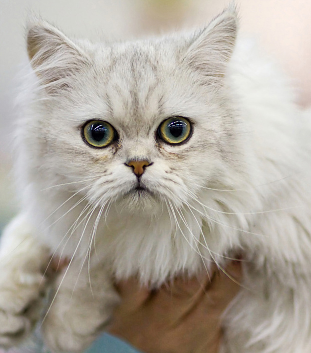
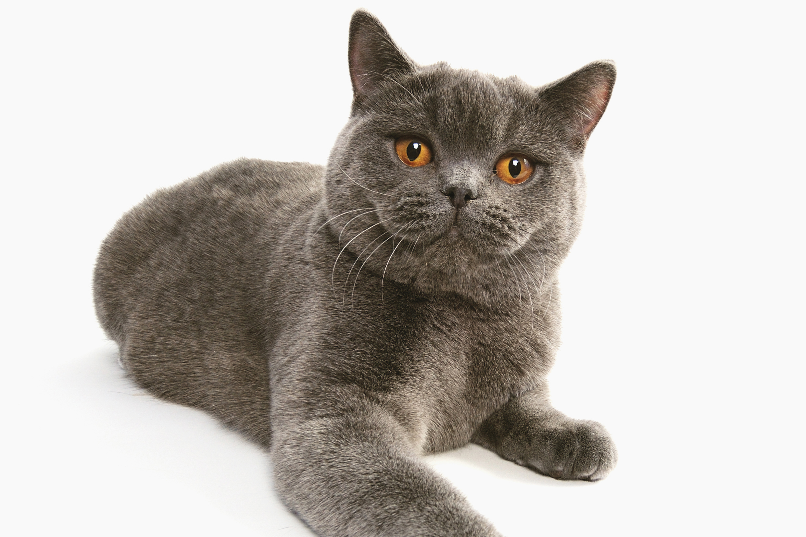
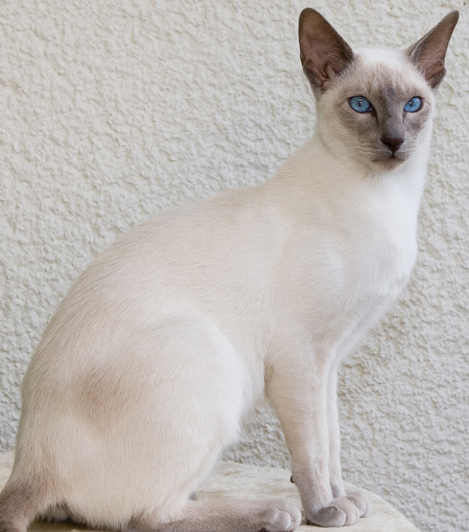
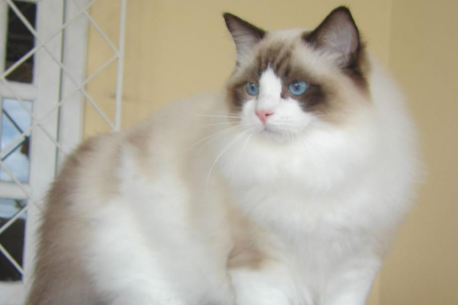
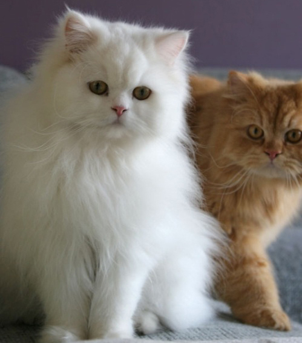
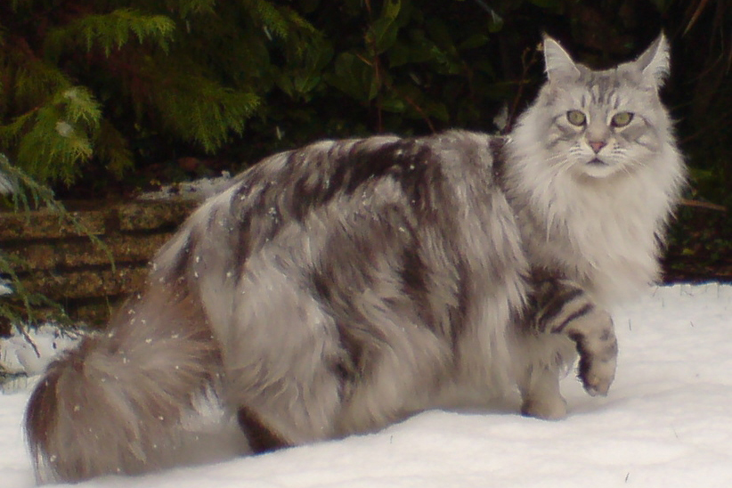
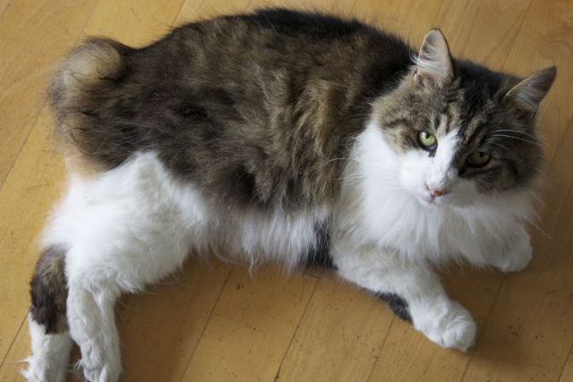
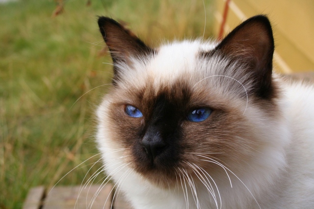
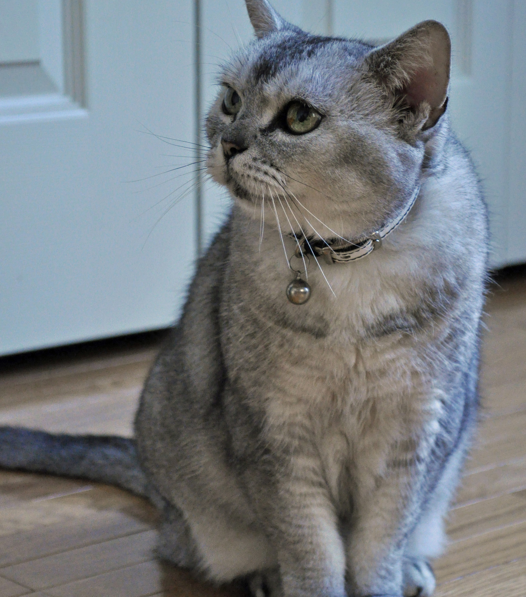
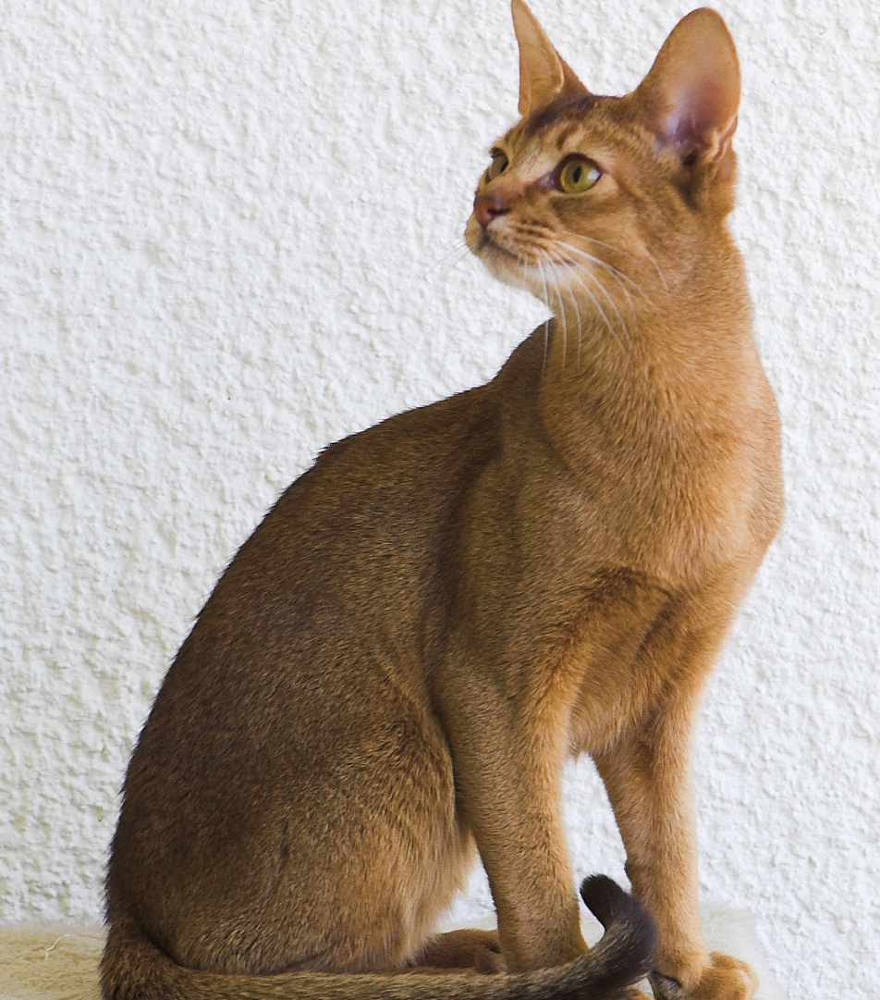

Picking the right Kitten or Cat

1. Tiffany
- Nickname: Chantilly or Goldilocks
- Look: Semi-longhaired, shiny coat, full cheekbones, and a round face plush with fur.
- Behavior: Ideal tempered, moderate, active, yet tolerates quiet time, curious, doesn't get into mischief.
- Family quality: Little grooming required.

2. British Shorthair
- Nickname: Man's Best Friend
- Look: Shorthair, muscular body, comes in several colours.
- Behavior: Can withstand enthusiastic petting or grabbing, often playful, very friendly.
- Family quality: Faithfully bonds with childen and adults.
- Requirments: Doesn't need a lot of grooming, yet prone to sunburns, white ones in particular are prone to tumors, and white with blue eyes are prone to deafness.

3. Siamese
- Nickname: Lady and the Tramp Famous Cats
- Look: Long, slender-necked, extremely shorthaired, lean and dignified, big ears, blue, almond-shaped eyes.
- Behavior: Curious, follows owner around often.
- Family quality: Loyal to family members, appetite for affection, calm but self-righteous.
- Requirments: Don't require lots of grooming.

4. Ragdoll
- Nickname: Raggedy Anne
- Look: Long haired, normally dark in the face and legs with blue eyes.
- Behavior: Limp when lifted, inactive, relaxed.
- Family quality: Companionable with children and pets, doesn't play for hours
- Requirments: Grooming is needed for their fur so it doesn't get tatted.

5. Persian
- Nickname: The Stuffed Animal
- Look: docile, flat-faced, fluffy and shiny fur.
- Behavior: Low level of activity, undemanding, love affection and petting, indoor cat.
- Family quality: Very good around children who are relaxed and calm.
- Requirments: Requires grooming with long coat, shouldn't be taken outside due to fur tatting.

6. Maine Coon
- Nickname: Outdoor Cat
- Look: Thick, luxurious fur.
- Behavior: Restless sleeping habits, loves the outdoors, facinated by water, chirps birds rather than mewing.
- Family quality: Very loyal to families.
- Requirments: Needs to be groomed once a week.

7. Manx
- Nickname: A native of the Isle of Man
- Look: Does not have a tail, comes both short and longhaired, full round face, short front legs and long hind legs.
- Behavior: Extremely playful breed, .
- Family quality: Has a high interactive level, they sometimes enjoy digging up or burying toys. They are very loyal to family, and friendly to others.
- Requirments: Should be kept indoors. Yet an outdoor hearty breen is considered the Maine Coon.

8. Birman
- Nickname: Cross between Siamese and Persian
- Look: Extra soft, their face paws and tails are darker than their off-white, longhaired coats.
- Behavior: Docile, sit still for long periods, and laid back.
- Family quality: Good for quieter or younger children or those equipped with strong patience skills who like cuddling.
- Requirments: Brush their longhaired coat to avoid knotting.

9. American Shorthair
- Nickname: The Working Cat
- Look: Shorthair, muscular.
- Behavior: Medium-active, playful to boost, even-tempered, loyal with development.
- Family quality: Companionable with children and pets, doesn't play for hours
- Requirments: Don't require lots of grooming, but like brushing.

10. Abyssinian
- Nickname: Clowns of the feline world
- Look: Long, slender and muscular
- Behavior: Energetic, like to be outside, amusing, very loyal
- Family quality: Don't make good pets for toddlers or younger children because they play outside a lot, yet warm up easily to new people.
- Requirments: Their claws become sharp quick.